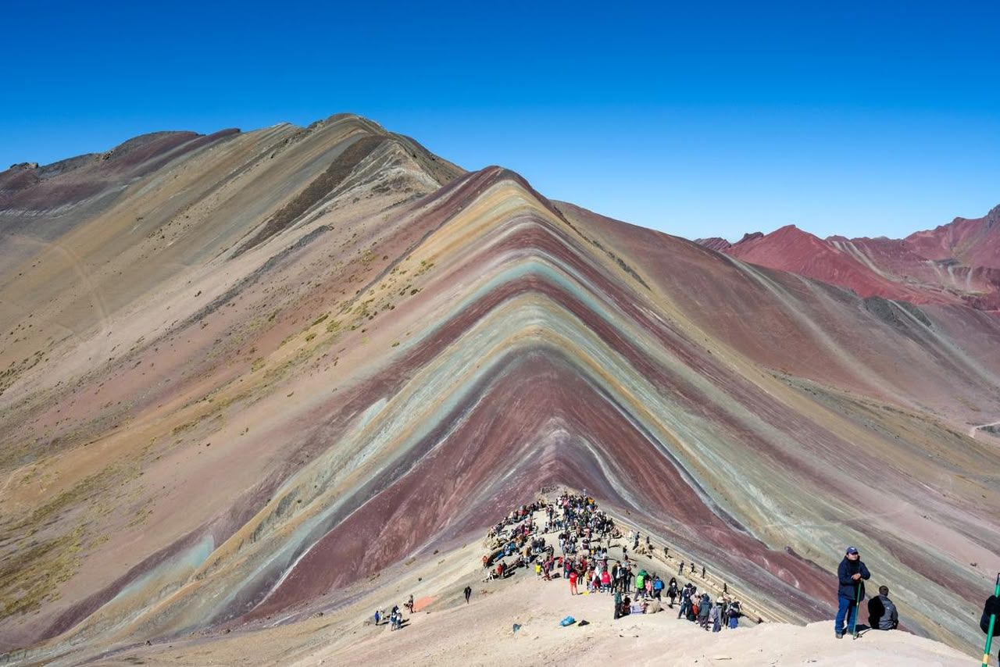
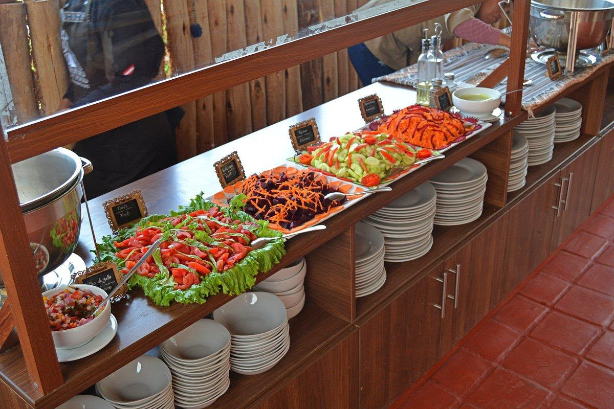
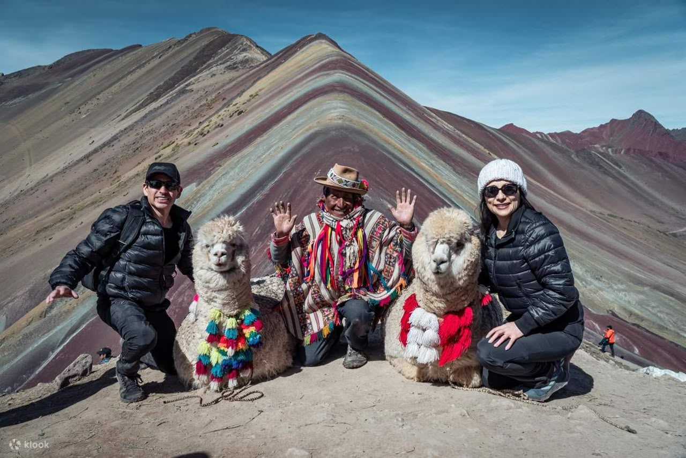

Itinerario
04:00–04:30
Recojo en Cusco.
04:30–06:30
Traslado hacia Cusipata.
07:15–08:15
Traslado a Phulawasipata.
08:15–08:30
Preparación para la caminata.
08:30–10:15
Caminata hacia la Montaña de Colores.
10:15–11:00
Tiempo en el mirador de Vinicunca, aproximadamente 5,036 m s. n. m.
12:15–13:15
Retorno a Cusipata.
14:15–16:30
Retorno a Cusco.
16:30–17:00
Llegada aproximada a Cusco.
Qué incluye
- Transporte turístico.
- Recojo y retorno en Cusco.
- Guía profesional en el idioma solicitado, sujeto a disponibilidad y cotización.
- Desayuno y almuerzo.
- Entrada a la Montaña de Colores.
- Bastones de trekking.
- Oxígeno portátil como equipo de apoyo.
- Asistencia general.
Qué no incluye
- Gastos personales.
- Servicios no especificados como incluidos.
- Alquiler de caballo (opcional, sujeto a disponibilidad y pago adicional).
- Asistente personal adicional (opcional, bajo coordinación).
Recomendaciones para el viajero
Para disfrutar de esta experiencia de manera segura, recomendamos:
- Aclimatarse previamente a la altura de Cusco.
- Llevar ropa abrigadora y cómoda.
- Utilizar zapatillas o botas de trekking.
- Llevar protector solar y lentes de sol.
- Llevar gorro y guantes.
- Llevar agua y snacks energéticos.
- Contar con una casaca impermeable o poncho para lluvia.
- Llevar dinero en efectivo para gastos adicionales.
- Respetar las indicaciones del guía durante la caminata.
Nivel de dificultad: Moderado a exigente debido a la altitud.
Altitud máxima: Aproximadamente 5,036 m s. n. m.
Duración: Aproximadamente 12 a 13 horas.
Opciones personalizadas
Ofrecemos alternativas para convertir esta excursión en una experiencia más exclusiva:
Tour privado VIP
- Transporte privado.
- Atención personalizada.
- Horarios flexibles.
- Experiencia adaptada al ritmo del viajero.
Experiencia fotográfica
- Paradas estratégicas para fotografías.
- Tiempo adicional para disfrutar del paisaje.
- Lugares especiales para capturar recuerdos.
Aventura a caballo
- Opción de alquiler de caballos para parte del ascenso.
- Alternativa para quienes prefieren reducir el esfuerzo físico.
- Servicio sujeto a disponibilidad y pago adicional.
Montaña de Colores + Valle Rojo
- Visita a Vinicunca.
- Exploración del impresionante Valle Rojo.
- Mayor tiempo de contacto con los paisajes altoandinos.
- Programa de mayor exigencia física y duración.
Experiencia cultural andina
- Acercamiento a las tradiciones de las comunidades locales.
- Conocimiento de las costumbres y actividades de la vida rural.
- Oportunidad de apreciar la cultura de los Andes.
Importante: la excursión alcanza gran altitud. Se recomienda una adecuada aclimatación previa. El oxígeno portátil es un equipo de apoyo y no sustituye la aclimatación ni elimina los riesgos asociados a la altura.
Una mirada a la experiencia


